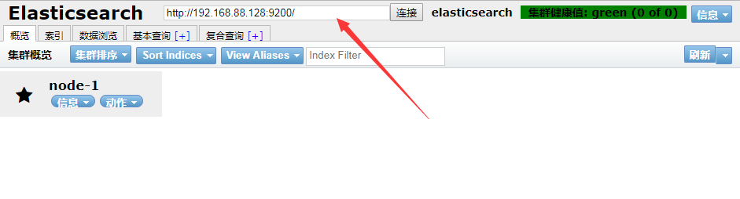

注
- config 文件夹下的 elasticsearch.yml 文件中的network.host可设置允许访问的网络
启动报错
1
2
3
4
5
6
7
8
9
10
11
12
13
14
15
16
17
18
19
20
21
22
23
24
25[1]: max file descriptors [4096] for elasticsearch process is too low, increase to at least [65535]
解决：在/etc/security/limits.conf文件中添加，(前边的*必须存在)
* soft nofile 65536
* hard nofile 131072
* soft nproc 2048
* hard nproc 4096
[2]: max number of threads [1024] for user [elsearch] is too low, increase to at least [4096]
解决：修改/etc/security/limits.d/90-nproc.conf
soft nproc 1024
为
soft nproc 4096
[3]: system call filters failed to install; check the logs and fix your configuration or disable system call filters at your own risk
解决： config文件夹中 elasticsearch.yml 文件最后边添加
bootstrap.system_call_filter: false
[4]: the default discovery settings are unsuitable for production use; at least one of [discovery.seed_hosts, discovery.seed_providers, cluster.initial_master_nodes] must be configured
解决： config文件夹中 elasticsearch.yml 文件
配置以下三者，最少其一
[discovery.seed_hosts, discovery.seed_providers, cluster.initial_master_nodes]
cluster.initial_master_nodes: ["node-1"] # 这里的node-1为node.name配置的值，同时需要放开node.name
最好添加：
indices.fielddata.cache.size: 20%
防止缓存满却未及时清理导致报错
修改完后最好使用exit退出登录，然后重新登录
其余报错解决方法： https://www.cnblogs.com/zhi-leaf/p/8484337.html
Elasticsearch
介绍
Elasticsearch 是一个分布式的开源搜索和分析引擎，适用于所有类型的数据，包括文本、数字、地理空间、结构化和非结构化数据。Elasticsearch 在 Apache Lucene 的基础上开发而成，由 Elasticsearch N.V.（即现在的 Elastic）于 2010 年首次发布。Elasticsearch 以其简单的 REST 风格 API、分布式特性、速度和可扩展性而闻名，是 Elastic Stack 的核心组件；Elastic Stack 是适用于数据采集、充实、存储、分析和可视化的一组开源工具。人们通常将 Elastic Stack 称为 ELK Stack（代指 Elasticsearch、Logstash 和 Kibana），目前 Elastic Stack 包括一系列丰富的轻量型数据采集代理，这些代理统称为 Beats，可用来向 Elasticsearch 发送数据。
下载
网址
https://www.elastic.co/cn/downloads/elasticsearch
单机版安装
1 | 创建elsearch用户，Elasticsearch不支持root用户运行 |
启动需要依赖jdk, 解决方法为:
- 开放根目录下的jdk权限，
- 在elsearch角色下安装jdk并配置在.bash_profile中
1 | 启动ES服务 |

表示安装并启动成功
head工具的安装及实用
由于ES官方并没有为ES提供界面管理工具,仅仅是提供了后台的服务。elasticsearch-head是一 个为ES开发的一个页
面客户端工具,其源码托管于GitHub ,地址为: https://github.com/mobz/elasticsearch-head
head提供了4种安装方式:
● 源码安装,通过npm run start启动(不推荐)
● 通过docker安装 (推荐)
● 通过chrome插件安装 (推荐)
● 通过ES的plugin方式安装 (不推荐)
chrome商店的方式安装(需要翻墙)
google应用商店
https://chrome.google.com/webstore/category/extensions?hl=zh
搜索
elasticsearch head 安装
修改Elasticsearch连接地址即可连接
通过docker安装（不会）
1 | 拉取镜像 |